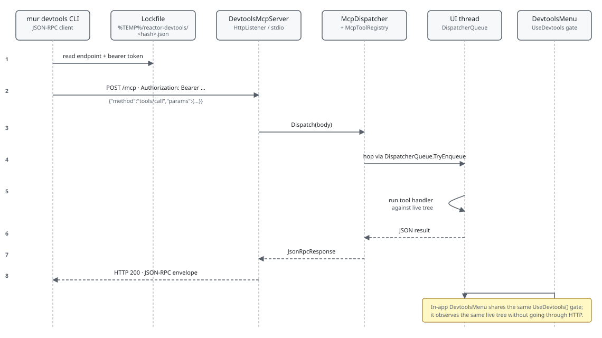

The Microsoft.UI.Reactor (Reactor) devtools surface is two subsystems that share a single
gate. The MCP server speaks JSON-RPC over either HTTP loopback or
stdio, exposing a fixed inventory of tools (tools/list, tools/call)
that an external CLI, editor, or agent harness drives against the
running app. The in-app dev menu — DevtoolsMenu(...), the keyboard
shortcuts, the reconcile-highlight overlay —
runs entirely in-process, observes the same component tree the user
sees, and is gated by the same UseDevtools() flag. Both subsystems
are zero-cost in retail: the gate evaluates a static readonly bool,
and code paths gated behind it never construct elements or register
ETW listeners. The most common mistake is reaching for a devtools
modifier outside the gate; in retail it's still a null-returning
factory and contributes nothing visual, but the code path still
allocates whatever the surrounding component constructed to pass to
it. Gate the construction, not just the rendering.
DevTools Internals¶
This page covers the internals of Reactor's devtools — the MCP server that external agents talk to, the in-app dev menu, the runtime overlays, and the gate that keeps the whole subsystem out of retail. Dev Tooling is the user-facing companion; this is the internals view.
The MCP loop¶

The MCP server is a loopback HttpListener (or a stdio reader/writer
loop) running inside the host process. On startup it picks a free
port, generates a per-launch bearer token, and writes a lockfile under
%TEMP%/reactor-devtools/<hash>.json advertising the endpoint, the
port, the pid, the build tag, and the token. The CLI reads that
lockfile to find the running app — there's no service registry, no
broadcast discovery, just a file in tempdir keyed by the project's
canonicalized path. Any process running as the same user can read
the lockfile, present the token, and call tools.
Reference¶
| Subsystem | Owner type | Source | Gate |
|---|---|---|---|
| Gate hook | UseDevtools() |
src/Reactor/Hooks/UseDevtools.cs |
Build-time Reactor.DevtoolsSupport AND session-time --devtools app |
| MCP server | DevtoolsMcpServer |
src/Reactor.Devtools/DevtoolsMcpServer.cs |
Bearer token + project lockfile |
| Tool registry | McpToolRegistry |
src/Reactor.Devtools/McpToolRegistry.cs |
Per-tool input-schema validation |
| JSON-RPC dispatch | McpDispatcher |
src/Reactor.Devtools/McpDispatcher.cs |
Method allowlist + tools/call routing |
| CLI client | McpCliClient |
src/Reactor.Cli/Devtools/McpCliClient.cs |
Reads lockfile, posts bearer-authed JSON-RPC |
| In-app menu | DevtoolsMenu(...) factory |
src/Reactor.Devtools/DevtoolsMenuFactory.cs |
UseDevtools() — returns Empty() when off |
| Overlays | ReactorFeatureFlags |
src/Reactor/Core/ |
Toggle binds an ETW listener only when on |
The gate¶
UseDevtools() returns ReactorApp.DevtoolsEnabled — the AND of two
independent signals captured at process startup. The build-time signal
is the Reactor.DevtoolsSupport runtime host configuration switch in
the app project; ship a release binary without it and the AND is false
no matter what flags the user passes. The session-time signal is the --devtools app (or
--devtools run) command-line argument the user supplies. Both must
hold for the gate to open.
The value is frozen for the session and the hook deliberately does
not consume a slot in the hook table. That's
why UseDevtools() can be called from helpers that aren't part of
the render path — there's no positional invariant to violate. The
trade-off: the value can't change at runtime. Flipping
ReactorApp.DevtoolsEnabled mid-session would produce a stale
gate read in every component already rendered.
Caveat: Calling
UseDevtools()does not opt the component into observing the flag — the flag is frozen for the session, so observation isn't needed. But code inside thedev ? DebugOverlay() : nullbranch is still evaluated when the gate is open, even if your overlay never displays anything user-visible. ADebugOverlay()factory that constructs 200 children to display in a dev-only data panel is 200 allocations per render whenever devtools are enabled, including during automated UI testing that happens to launch with--devtools app. Gate construction, not just display.
The CLI client¶
internal sealed class McpCliClient : IDisposable
{
private readonly HttpClient _http;
private readonly string _endpoint;
private readonly string? _token;
public McpCliClient(string endpoint, TimeSpan? timeout = null, string? token = null)
{
_endpoint = endpoint;
_token = token;
_http = new HttpClient { Timeout = timeout ?? TimeSpan.FromSeconds(30) };
if (!string.IsNullOrEmpty(token))
{
_http.DefaultRequestHeaders.Authorization =
new global::System.Net.Http.Headers.AuthenticationHeaderValue("Bearer", token);
}
}
McpCliClient is the CLI-side terminus of the MCP loop. It takes an
endpoint URL, an optional bearer token, and an optional timeout, and
exposes InvokeTool and InvokeMethod as the two entry points; the
CLI's verb commands (mur devtools components, mur devtools click,
…) all layer on top of InvokeTool with the tool name baked in. The
token comes from the lockfile the server wrote on startup, so the
discovery flow is open-the-lockfile → read endpoint + token →
construct client. The Authorization: Bearer <token> header is the
only thing standing between an attacker on localhost and the
running app's MCP surface — the lockfile sits in the user's tempdir
so any process running as the user can read it, but processes
running as other users can't.
Endpoint discovery¶
The lockfile under %TEMP%/reactor-devtools/<hash>.json carries the
endpoint URL, the per-launch bearer token, the pid (for liveness
probing), the build tag, the transport (http or stdio), and the
project path. The path hash is a truncated SHA-256 of the
canonicalized .csproj path — C:\foo\bar.csproj and
c:/foo/bar.csproj collide deliberately, so re-launching the same
project from a different shell finds the existing session rather
than starting a second one. The mur devtools supervisor
checks for a live lockfile before binding a new port; if one exists
and the process is still alive, the second invocation exits with the
running session's information instead of starting a new server.
A lockfile is stale when the recorded pid doesn't match a running
process. The CLI deletes stale lockfiles on read; the running server
doesn't proactively re-write its lockfile, but it also doesn't need
to — the file's pid field is the only check that matters, and the
pid doesn't change for the life of the session.
Tool dispatch — the UI-thread hop¶
private object? HandleCall(JsonElement? @params)
{
if (@params is not { } p || p.ValueKind != JsonValueKind.Object)
throw new McpToolException("tools/call params must be an object with { name, arguments? }.",
JsonRpcErrorCodes.InvalidParams);
if (!p.TryGetProperty("name", out var nameEl) || nameEl.ValueKind != JsonValueKind.String)
throw new McpToolException("tools/call requires a string 'name' field.", JsonRpcErrorCodes.InvalidParams);
var name = nameEl.GetString()!;
JsonElement? args = p.TryGetProperty("arguments", out var argsEl) ? argsEl : null;
return Invoke(name, args);
}
Tool handlers reach the UI dispatcher, but not because the dispatcher
puts them there. McpDispatcher.HandleCall parses { name, arguments }
off the JSON-RPC params, looks the handler up in the
McpToolRegistry, and invokes
it inline on the transport's worker thread. Each handler that touches
WinUI wraps its body in server.OnDispatcher<T>(...), which returns
immediately when it already has thread access and otherwise posts
through DispatcherQueue.TryEnqueue and waits (5 s default timeout).
That hop is what makes it safe for a handler to query the live WinUI
tree — WindowRegistry.Snapshot(), host.Mount(new T()), every
property read on a FrameworkElement — all of which assume the calling
thread is the one that owns the visual tree. A handler that forgets the
wrapper races against the UI thread and either throws
COMException or produces a stale snapshot.
The dispatch path is the same for HTTP and stdio. The two transports
diverge only at the read boundary (HttpListenerContext vs
StreamReader) and the write boundary (HttpListenerResponse vs
StreamWriter). Everything between — JSON-RPC parsing, the
McpDispatcher.Dispatch(body) call, the registry lookup, the tool
handler — is shared code.
The reference-graph overlay¶
The references MCP tool walks the visual tree and returns the app's
reactive reference graph: the reference edges every control declares
through descriptor.Reference/.ReferenceList, the binding.Reference
bridge, and the modifier-level edges (.LabeledBy, .DescribedBy,
.FlowsTo/.FlowsFrom, .XYFocusUp/Down/Left/Right). Each edge is
emitted as {from, to, label, slot, kind, resolved} keyed to the same
node ids the tree tool uses, plus diagnostics for cycles and
unresolved (perpetually-null) references. Cycles are a supported
topology — push resolution converges on them by design — so they are
reported informationally, not as errors. The edges live in each
control's own ReactorState.ReferenceEdges bag; the overlay
(ReferenceOverlay) reads those bags after the TreeWalker records its
element→id map, so it never re-walks or re-renders.
The same overlay is served over the preview loopback at GET /references
(PreviewCaptureServer) so the VS Code live-preview extension can draw
the graph next to the streamed frame. Like every tool handler, the build
hops the UI dispatcher first, because reading the per-control reference
state touches attached dependency properties that only the UI thread may
read.
The in-app menu¶
DevtoolsMenu(...) is the in-app counterpart to the MCP server: a
titlebar widget that shows up only when UseDevtools() is true and
hosts a flyout of MenuFlyoutItemBase items the host app supplies.
The pattern is static readonly Observable<bool> fields in an
AppFlags class, mutated by ToggleMenuItem callbacks, observed by
components via ctx.UseObservable(AppFlags.DebugUI).Value. The
DevtoolsMenu factory also appends a built-in
"Highlight reconcile changes" toggle that drives the
overlay subsystem.
When the gate is closed, the factory returns Empty() and never
invokes the items lambda — every menu construction inside the
lambda is skipped at retail cost of one bool check. That asymmetry
matters: callers can freely allocate Observable<bool> fields,
construct MenuItem records, and read state from the surrounding
component without paying for any of it when the app ships without
the gate flipped.
Overlays¶
The reconcile-highlight overlay attaches to a running app when the
gate is open. It's driven by
ReactorFeatureFlags.HighlightReconcileChanges, a simple static bool
property the dev menu toggles. The overlay is a stateless wrapper
that paints a brief flash on every element the reconciler patched on
the most recent render. It does not allocate per frame when its flag
is off.
Patterns¶
Adding a new MCP tool¶
The MCP tool surface is internal to Reactor.Devtools — the registry
(McpToolRegistry), the descriptor (McpToolDescriptor), and the
schema node (SchemaNode) are all internal types, so this is a
framework-contributor extension point, not a host-app one. A host that
wants agent-visible custom state exposes it through an existing tool's
payload rather than registering a new verb.
Inside the assembly, registration happens at server bring-up. The shape
is a descriptor (name, description, input schema built with the
Schema helpers) plus an McpToolHandler — a
delegate object? (JsonElement? @params) — that returns a
JSON-serializable result:
server.Tools.Register(
new McpToolDescriptor(
Name: "docking.list",
Description:
"Enumerates every live DockManager host in the process. " +
"Returns { hosts: [{ id, paneCount, activeKey, sideCounts }] }. " +
"Host ids are stable for the lifetime of the underlying element; " +
"agents pass them to docking.snapshot / docking.dock.",
InputSchema: Schema.Root()),
_ => server.OnDispatcher<object>(() => BuildListPayload()));
The tool shows up in tools/list on the next call, with the input
schema echoed back to agents that introspect their tool inventory.
Schema.Root() with no arguments is the "takes no parameters" shape;
the overloads take a required name array and (name, node) pairs, and
a required name that isn't a declared property is a hard error at
registration time rather than a wire-level surprise. Handlers that touch
WinUI state wrap their body in server.OnDispatcher<T>(...), which is
the dispatcher trampoline every built-in tool uses — see the
docking.list registration in
src/Reactor.Devtools/DevtoolsDockingTools.cs for the canonical shape.
Common Mistakes¶
Reaching for UseDevtools to gate a render-time decision¶
// Don't:
public override Element Render()
{
var (dev, _) = UseState(this.UseDevtools()); // captures once, never refreshes
return dev ? VStack(...) : VStack(...);
}
UseDevtools() is already a static read; wrapping it in
UseState gains nothing and loses the contract: the
state cell only captures the value once and ignores subsequent
session changes. Just call UseDevtools() inline at the branch
point — it's a static readonly bool read, allocation-free, and
the value doesn't change for the life of the session anyway.
Tips¶
The lockfile is the discovery contract. When an agent or CLI
can't find a running app, the first thing to check is whether the
lockfile exists at %TEMP%/reactor-devtools/. Missing means the
session didn't pass the build-time gate. Present but stale means
the previous session crashed; deleting the file unblocks the next
launch.
Observable<bool> is the dev-flag pattern. Plain static bool
fields don't notify, so toggling them from the dev menu doesn't
re-render components that observe them. The
devtools-menu cookbook in dev-tooling.md uses
static readonly Observable<bool> fields exactly so the
UseObservable hook can pick up changes.
Tools that touch the tree must hop the dispatcher. JSON-RPC
dispatch runs the handler inline on the transport thread; the UI-thread
hop is opt-in per handler via server.OnDispatcher<T>(...). Any
reconciler-touching or FrameworkElement-reading
code path belongs inside that wrapper.
Next Steps¶
- Dev Tooling — User-facing devtools API and the inner-loop story.
- Perf Instrumentation — ETW provider the overlays consume.
- Hooks Internals — Why
UseDevtoolsdoesn't consume a slot. - Reconciliation — How the reconcile-highlight overlay observes patches.
- Focus and Input Internals — Previous under-the-hood page.